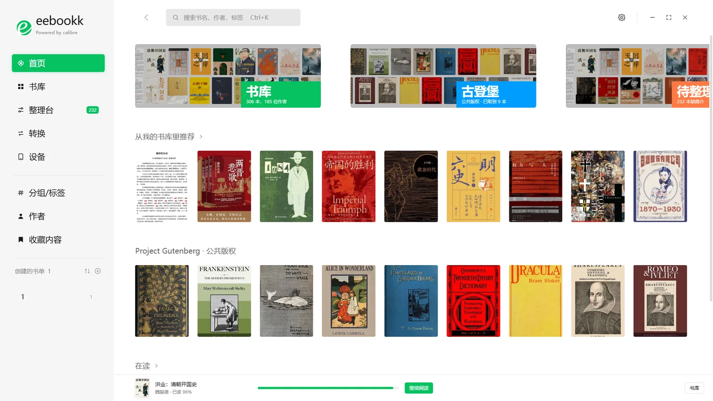
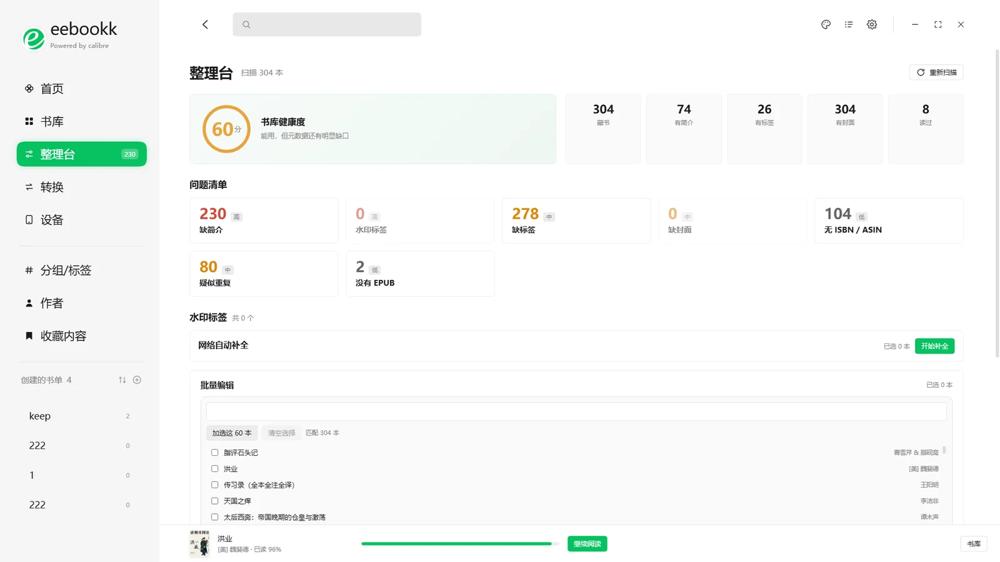
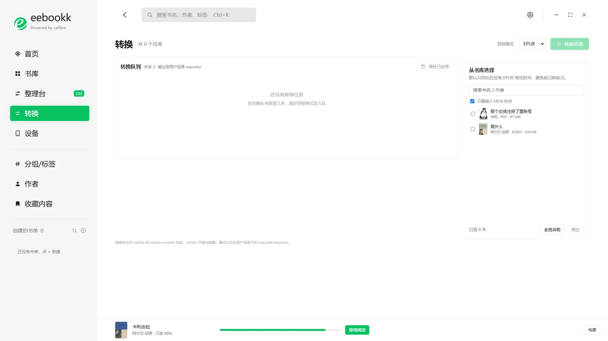
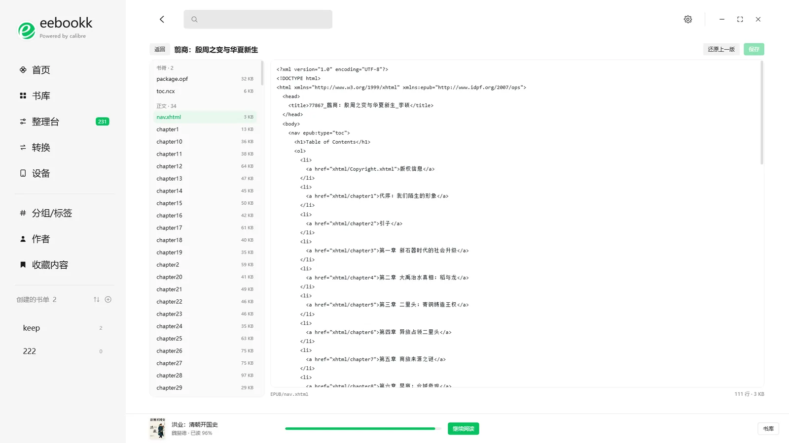
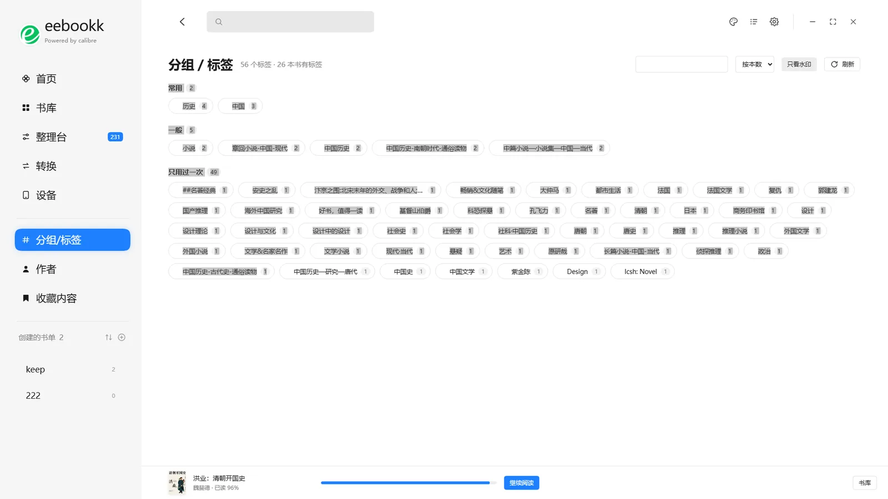

书库管理
封面墙与表格两种视图，按书名、作者、入库时间、大小、评分排序。Ctrl 点击多选，底部操作条一次转换、推送、加入书单或删除。
- 封面墙 / 表格
- 缺简介 · 缺封面 · 无 EPUB
- 批量操作
v0.1.23 · Windows x64 · MIT
找书、改元数据、批量转换、推送 Kindle、直接读 EPUB —— 日常最常用的几件事，都在一个窗口里完成。书库仍然是 calibre 的书库：关掉 eebookk，calibre 打开还是原样。

核心功能
calibre 的功能很全，只是界面停在 2005 年。eebookk 不重写书库，只把找书、整理、转换、推送、阅读这几个高频动作，做成一个连贯的工作台。
封面墙与表格两种视图，按书名、作者、入库时间、大小、评分排序。Ctrl 点击多选，底部操作条一次转换、推送、加入书单或删除。
一次扫描给出书库健康度和问题清单：缺简介、缺标签、缺封面、疑似重复、没有 EPUB、水印标签。点进任一问题，直接带着选择去处理。
把 calibre 的 ebook-convert 做成队列：选书、选目标格式、入队即可。并发 1–4 本，进度实时更新，队列落盘，重启后还在。
插上设备，识别盘符后直接推送，只复制 EPUB 到 documents/eebookk/；也可以走 SMTP 邮件推送，QQ、163、Gmail、Outlook 都有预设。
EPUB 直接在应用里打开，不跳出去。目录、上一章 / 下一章、字号 15–30、浅色 / 米黄 / 深色三档，读到哪记到哪。
像 calibre 的 Edit book：按类型列出 OPF、NCX、正文、样式、图片。改完重建整个 zip，保证 mimetype 规范；保存前自动备份，保留最近 5 版。
书名、作者、系列、出版社、日期、语言、评分、标签、标识符、自定义列都能改。豆瓣、微信读书、NeoDB 三源一次查，封面标注真实像素。
选图后拖拽定位、滚轮缩放 100–400%，支持旋转与水平翻转，输出固定 2:3 的 900 / 1200 / 1600 三档。全网找封面按像素面积从大到小排列。
产品导览
下面的截图来自一台装了 300 多本书的机器，不是设计稿。点左侧切换页面。
封面墙、紧凑表格与筛选条共用一套数据。选中一批书以后，转换、推送、书单、删除都在底部操作条里，不用来回切换页面。

扫描一遍给出健康度和问题清单。点「去处理」会带着这批书跳到对应页面；下面的批量编辑可以一次改系列、出版社、出版日期、语言和评分，也可以给标签加一组、删一组。

右侧勾选书、选目标格式入队，左侧实时显示进度。默认只列出还没有 EPUB 的书，避免自己转自己；并发数、输出目录和附加参数都在设置里改。
USB 方式只复制 EPUB，落在 documents/eebookk/；邮件方式走你的 SMTP 账号，快捷预设覆盖 QQ、163、Gmail、Outlook。单封上限会提前拦住超限文件，不会截断。
流式渲染 EPUB，左侧目录直接跳章。字号 15–30、浅色 / 米黄 / 深色三档，进度实时写进本地，底栏常驻显示最近在读。

左侧按书脊、正文、样式、图片、字体分组列出文件，中间编辑，右侧实时预览。保存时重建 zip，mimetype 仍是第一个条目且不压缩，写完重新读回比对。
一次查豆瓣、微信读书、NeoDB，结果按来源列出。点一条只填入表单，不会立刻写库；确认无误再保存。标识符整组替换，自定义列按类型提交。

标签按常用、一般、只用过一次分组，每枚药丸右侧是使用次数。多选后可以批量改名、合并、删除，水印标签一键清理。
顶部字母表直接跳到对应分组，卡片显示作者名与藏书数。支持多选后批量改名、合并、删除，外文作者会剥掉国籍前缀再归类。
还有这些
药丸流、按使用频次分组，多选后可批量改名、合并、删除。
只存在 eebookk 本地（collections.json），不写进 calibre，也不会动你的标签。
内置 Gutenberg、Standard Ebooks、Feedbooks，也可以添加任意 OPDS 地址，启用或停用。
Ctrl+K 搜索，页面直达键可自定义；快捷键在设置里集中管理。
浅色 / 深色 / 跟随系统，主色、封面圆角、网格密度都能按习惯调。
写库前备份 metadata.db；删除先进回收站；EPUB 编辑器保留最近 5 版。
顶栏「任务」按钮直接看转换进度，运行中的任务有状态点，不用切页面。
启动时读取版本清单 JSON，也可以填自建地址；有新版本时在设置里提示。
输出配置文件、添加去重、导出模板，都接进了 calibredb 与 ebook-convert。
和 calibre 的关系
不碰 calibre 的源码，不改目录结构，也不导入自己的数据库。你随时可以不用它。
SQLite 直读，306 本书大约 1 ms。calibre 开着也能读，不需要启动任何进程。
不直接写数据库，每次修改的结果都和 calibre 自己动手一致。
每 4 秒探测进程，检测到就禁用所有写入按钮，顶部常驻「编辑已锁定」。
写库前存一份 metadata.db；删除前把书移到回收站；编辑器保存前留 5 个版本。
calibre 是 GPLv3 的独立程序，不随本应用分发。eebookk 以 MIT 许可开源。
下载
一个安装包，Windows 10 / 11 x64。第一次启动会自己找 calibre 书库，找不到再让你指定。
最新版本 · 2026-10-26
Windows 10 / 11 · x64 · NSIS 安装包
下载失败时，可以到 GitHub Releases 手动选版本。安装包未做代码签名，SmartScreen 提示时选「更多信息 → 仍要运行」；校验值见发布页。
eebookk 复用 calibre 的书库与转换器，本机测试版本 9.15.0。
双击安装包，可以改安装目录，桌面与开始菜单会自动建快捷方式。
首次启动自动查找 calibre 书库；找不到时，选择 metadata.db 所在目录。
Windows 10 / 11 x64，已安装 calibre。除书源、全网查书和更新检查外，其余功能不需要联网。
npm install → npm run dev；出安装包用 npm run dist:win。仓库里有完整的 README。
设置、收藏、阅读进度、转换队列与备份都在 %APPDATA%\eebookk\，不写进 calibre 书库。
需要。eebookk 读的是 calibre 的 metadata.db，写操作调用 calibredb，转换调用 ebook-convert。它不内置书库，也不分发 calibre。
写操作全部通过 calibre 自己的命令行工具完成；写库前自动备份 metadata.db；删除前把书复制到回收站；EPUB 编辑器每次保存前留一份备份。calibre 运行时，所有写入按钮会被禁用。
目前只发布 Windows x64 安装包。项目基于 Electron + React + TypeScript，源码公开，其他平台可以自行构建，但还没有验证过。
不会。书籍、元数据和阅读进度都在本机。只有你主动使用 OPDS 书源、全网查书或检查更新时，应用才会访问对应的网络地址。
安装包没有代码签名，SmartScreen 会拦一下。点「更多信息 → 仍要运行」即可，校验值可以在 GitHub Releases 页面查看。
EPUB，按流式渲染。PDF 和 AZW3 会提示用系统阅读器打开；需要 EPUB 时，可以直接在转换页入队。
不会。收藏和书单保存在 %APPDATA%\eebookk\collections.json，calibre 里看不到，换机器也不会带走。